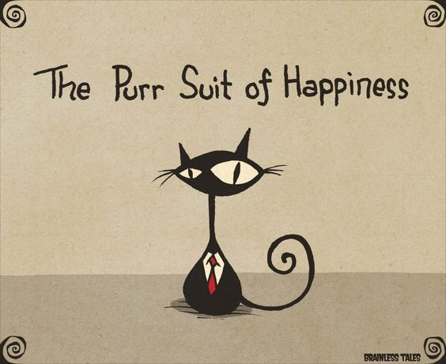

Strings
A class of characters
© We Can Code IT, LLC
Strings are Things
String is a class from which we create objects. Object Oriented Programming (OOP) allows us to create abstractions to simplify the problem we’re solving.
We use abstraction all the time in everyday activities. When you sit down to eat at your favorite resturaunt, one of the first things we order may be a drink.
If you ordered Sugar, Concentrated orange juice, Citric acid, Natural flavors, Sodium benzoate, Caffeine, Sodium citrate, Erythorbic acid,Gum arabic, and Calcium disodium, the server would have no idea what you are asking. Right!! We use abstraction to descibe what we want to drink by utilizing the name ‘Mountian Dew’.
Abstraction allows us to use methods to manipulate a sequence of chars and create new Strings.
Today, we’ll show you some of the ways that you can do that.
Clean, organized, commented code increases your success
-
Before we jump into our next lesson, lets revisit our Hello World project.
-
We are going to organize and comment our code.
-
Doing so will help us to keep track of our progress, understand what our code’s function, and help in future development and troubleshooting.
-
Go ahead and open up Visual Studion > then open our Hello World project.
-
Volunteer time
-
Please make the following changes to your code
- Please make the following changes to your code
Nothing to do with cats
When we use the operator + with Strings, we call this concatenation. It’s not adding them as we would add numbers, but it’s appending one String to another, resulting in a longer String. C# knows how to turn characters into Strings, so it does that for us behind the scenes, saving us a bit of work. What would this display?
int numberOfSuits = 4;
Console.WriteLine("I have " + numberOfSuits + " suits.");

Courtesy of Brainless Tales
Strings are Objects
When we deal with Value type variables, we compare them using the equals (==) operator:
int numberOfMaids = 7;
int numberOfMops = 7;
if(numberOfMaids == numberOfMops) {
Console.WriteLine("They might get it clear in half a year.");
}
When we compare objects (like Strings), we use the equals method:
String shoeDescription = "Their shoes were clean and neat";
if(shoeDescription.equals("Their shoes were clean and neat")) {
Console.WriteLine("This is odd, because, you know,");
Console.WriteLine("They hadn't any feet.");
}
Inspiration courtesy of Lewis Carroll’s The Walrus and The Carpenter. (The oddness about the shoes in question lies in them belonging to “Oysters”.)
Just in Case
Methods we call on Strings create and return new Strings rather than changing the original String. Strings in C# are immutable meaning the value of the string cannot be changed after initialization. A common need is to convert a String to all uppercase or all lowercase:
String myGreeting = "Hello";
Console.WriteLine(myGreeting.toUpperCase()); // prints "HELLO"
Console.WriteLine(myGreeting.toLowerCase()); // prints "hello"
Console.WriteLine(myGreeting); // prints "Hello"
Sensitivity Training
We often use one of these methods to normalize user input. If we’re asking for a color and call the toLower() method on the user’s response before comparing it to “red”, the user can type “RED”, “Red”, or “red” and it won’t matter.
Console.WriteLine("Enter a color, please.")
String response = Console.ReadLine();
if(response.toLower().equals("red")) {
Console.WriteLine("Roses can be red. Also, lilies.");
}
Length
A String’s length() method will tell us how many characters it contains.
String palindrome = "A dog, a panic, in a pagoda";
int palindromeLength = palindrome.length();
Console.WriteLine(palindrome + " has " + palindromeLength
+ " characters.");
Escape!
Sometimes we need special characters in Strings. The obvious example is a quotation mark. Quotation marks are what open and close Strings, so how would we include a quotation mark in a String? We do something called escaping. We refer to the backslash (\) we use as an escape character.
Console.WriteLine("Phil said, \"You've got red on you\".");
We can also use escaping to insert special characters like newlines (\n) and tabs (\t):
Console.WriteLine("This is the first line.\nSecond line");
Console.WriteLine("\tThis line is indented.");
Other Useful Methods
| method | description | example | result |
|---|---|---|---|
trim |
trims the whitespace from the beginning and end of a String; useful for cleaning up user input |
" bar ".trim() |
"bar" |
charAt |
returns the char at the specified (zero-based) index |
"bar".charAt(2) |
'r' |
equalsIgnoreCase |
an alternative to using toLowerCase() or toUpperCase() for comparisons; compares this String to another, ignoring case |
"bar".equalsIgnoreCase("BaR") |
true |
indexOf |
returns the index of the first occurence of a substring in this String |
"foo bar baz".indexOf("bar") |
4 |
Moar Useful Methods
| method | description | example | result |
|---|---|---|---|
contains |
indicates whether this String contains a substring |
"foobarbaz".contains("ba") |
true |
startsWith |
indicates whether this String starts with another |
"foo".startsWith("f") |
true |
endsWith |
indicates whether this String ends with another |
"baz".endsWith("az") |
true |
substring |
returns a substring starting at the specified index, optionally including an end index | "hello".substring(1)"hello".substring(1, 4) |
"ello""ell" |
Examine the String Class
Let’s explore how we can use our IDE to examine the String class and discover other methods we may use. We will also find things that perplex us.
Let’s do it!
- Use the
toLower()method with some of your previous exercises to ignore case while looking at the user’s response. - Ask the user for her first name and last name. Use the
length()method to tell her which is longer. - Ask the user for her first name and last name, then print her full name, including the necessary space between first and last name.
- Ask the user to answer your riddle. Use the appropriate method to examine the answer, ignoring case. (You supply the riddle. Finding one is half the fun.)
Let’s do it moar!
- Ask the user for two Strings. Check and see if the two Strings are equal to each other. If they are, inform the the user that the Strings are equal; otherwise, inform the user that the Strings are not equal.
- Change your code so that it ignores case in the comparison.
- Ask the user to create a password. Then have the user enter the password again to verify there were no typing errors. Display a message if the user properly or improperly matched their password entries.
- Ask the user to create a user name. Make sure the user name is at least 8 characters in length and that the user name contains the word “code” somewhere regardless of case. Greet the user by their user name if it is properly entered, otherwise ask the user to try again.